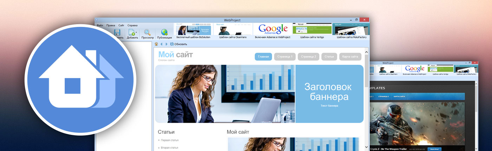

Проекты для комьюнити MaxSite
Здесь выкладываются мои публичные работы для сообщества MaxSite CMS.
Статьи
Когда-то я написал две статьи (с перерывом в год) о слабых сторонах макссайта.
Плагины для MaxSite
Скачайте бесплатные плагины для MaxSite CMS.
Шаблоны
В открытый доступ я выкладывал только один шаблон. Но он просто ужасен, очень стар и не совместим с последними версиями движка. Поэтому здесь его выкладывать не буду.